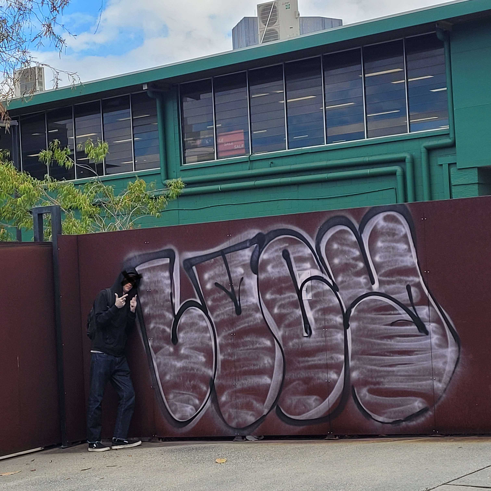
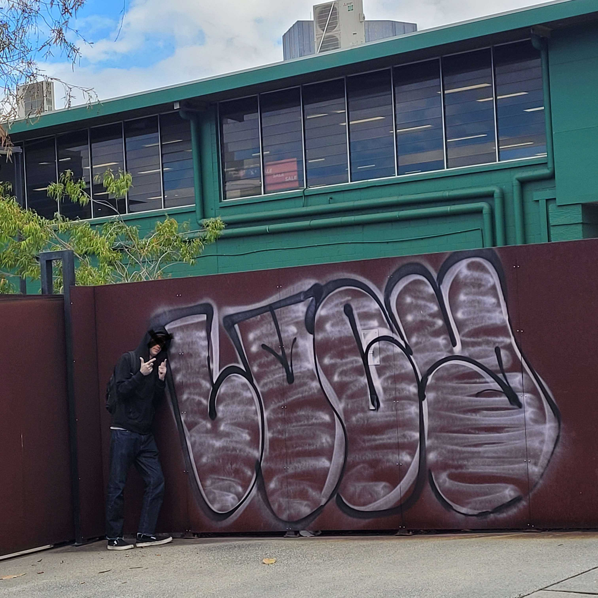

Bombing Brisbane with Lucy
A talk about getting into Graff and a showcase of art.

Today I met up with a good friend of mine, Lucy, a prolific Brisbane street artist.
I picked him up from his place and we drove down to green slopes and the legal graffiti area. He
showed me a couple of pieces he had done and we checked out the tunnels there while I asked him
some questions. The first thing I asked him was how he felt about the legal graffiti area and the
culture there, if he came down here to paint much. He told me that he wasn't into it, he had a few
pieces here but it wasn't his thing. When I asked him why he didn't like painting there he said “I
paint because I’m angry half the time. I did it to piss you off, lets bring the fucking vandalism back
into it.” He went on to tell me that he was frustrated that there was a culture of keeping your art in
between the lines on the legal walls, avoiding going over other peoples work. He showed me a
piece of art he had done where a small part of his work crossed over onto another artists piece,
someone had written a note there telling him off for it. When Lucy saw this he said “Look at this,
Queensland graffiti is too corporate, rules to my graf? Fuck off.” I asked, so your not a fan of the
polite culture? He replied “people tell you there are rules for it. I don't know how to put it into
words but, fuck that. If someone wants to paint over me there going to have to walk all over
Brisbane, and Melbourne, and Adelaide, and the small towns in between too. Fuck them if they
didn't want to be painted over they should have done something better” Lucy decided he was over it
so we packed up and headed back to the car.
We went for a drive and he gave directions so he could point out his tags from the road. While we were driving he told me how he got so good at what he does “I used to wake up and go rack a bag of groceries for breakfast, come home and sit around all day practising what I was going to do that night, then every night go out and put up a big piece. Every night for months I had at least one new spot done.” Iv known Lucy since high school so I asked when this was happening, he brought up some memories, we had both dropped out of school young and done what we could for cash and a place to sleep “Remember when I ditched brisy and went down to Melbourne?” It must have been around 19 “I got heavy on it down there, hook line and sinker. My house mate was world famous in it, he was passionate about it and it rubbed off on me, he went to jail for it. You know how hard core you have to be in this to go to jail for graffiti?” I asked if his style was like his mentors, he said “nah, I like Horfe. He’s a french artist, Horfe, he’s inspired by Disney. Its fucking genius honestly. If you put some lines here” he made shapes in the air with his hands as if he was spraying as he spoke “it all looks so simple and easy to do but it brings it to life. Its so much better than that gang sign shit”
 

Lucy showed me some cool stuff on the drive, he asked me to bring him down to West End where he could show me some stuff he was proud of. I parked the car and followed him. He lead the way showing me how to climb up onto the roofs of the businesses there. While we were up there he told me “When I first started I just got addicted to getting better. I set rules for myself to improve. You know you gota do something right? I couldn't be fucked to do carpentry” we had for a time both laboured for my father's construction company at $10 an hour “and I couldn't force myself to learn IT to get out of it because I just didn't care.” We had also both gone to TAFE to learn IT hoping to get better employment. I asked him what made this different for him, “I don't know man its just like, fuck, always been intrigued by art but never had an outlet for it”. We got some photos and reminisced about the past for a while before Lucy suddenly said “we really shouldn't be up here so long in the middle of the day” and to be fair some people walking by had noticed us more than once while we talked. We climbed back down and went for a drink. Having a beer together I asked if he had any last words for the interview, maybe a message for aspiring artists. He said “Nah its not about art, just find something. Just find something and you know, if it makes you happy put the effort in. Once you delve into your craft things start getting fucking sick and that goes for anything.”